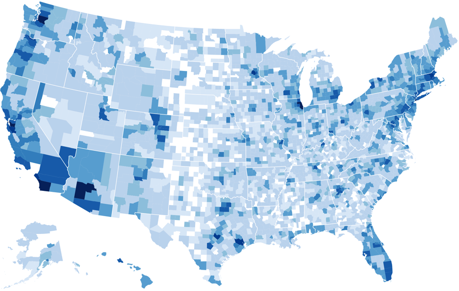

This map highlights the number of respondents to the initial Federal Communications Commission public comment period on its proposed changes for net neutrality rules.
Hover to see each county or click to zoom into an individual state
* represents number of comments that contained correct zip codes
** out of 3,007
| County | Responses |
|---|---|
| Los Angeles County, CA | 19,196 |
| Cook County, IL | 10,027 |
| King County, WA | 9023 |
| New York County, NY | 6718 |
| San Francisco County, CA | 5960 |
| San Diego County, CA | 5935 |
| Alameda County, CA | 5627 |
| King County, NY | 5413 |
| Maricopa County, AZ | 5313 |
| Middlesex, MA | 4989 |